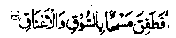

Chapter Seven
61. Shibli’s accusation of miserliness against himself
Sheikh Shibli Rahmatullah alaihe says: Once, a voice whispered in my heart, ‘Shibli, you are a miser.’My proud self said, "I am not a miser." But the voice insisted, "No, you are a miser." I decided to make a trial of myself and said, addressing my own self, "In order to prove that I am not a miser, I shall give away any amount that I happen to receive, however large, to the first poor man that I come across after receiving the money." As soon as I had made up my mind, a man came and gave me a gift of fifty Dinaars, which I took and went out looking for some poor, needy person, as I had promised myself. I soon came upon a blind ragged man getting a hair-cut at a barber’s shop. I put the Dinaars into the blind man’s lap, who said, "Give the money to the barber as his wages for cutting my hair". I said, "These are fifty Dinaars." ‘(Too large an amount to be given as wages for a hair-cut). At this, the blind man turned towards me and said,“Didn’t we say you are a miser?" I hurriedly handed the money to the hair-dresser, who declined to accept it, saying," Excuse me; when this man came to me, I decided not to take anything from him as wages, out of regard for his poverty." I felt so ashamed that I threw the bag of money into the river, saying, "Curse you, you filthy wealth! Allah Ta'ala humiliates him who has any regard for you, just as He has humiliated me" (Raudh). There is nothing extraordinary about the Sheikh’s throwing the Dinaars into the river, because his sense of honour was wounded. Many similar instances can be recounted.
(i) Once Sulaiman Alaihissalam was busy inspecting his horses and he forgot to make remembrance (Zikr) of Allah before sunset; when he was reminded of it,

He began to slash (with the sword) their legs and necks (slaughter the horses)-(Surah Saad: 33)
(ii) Syedah Aishah Radhiallaho anha threw away and broke the bowl of food sent to her house by one of her co-wives, in the very presence of Rasulullah Sallallaho alaihe wasallam.
(iii) Abdullah bin Amar bin ‘Aas Radhiallaho anho burnt away a garment dyed with’ ‘Usfiir’ (a reddish yellow dye) because Rasulullah Sallallaho alaihe wasallam, on seeing him wearing it, had said, "What is this?? indicating his dislike of the dye.
(iv) A man from the Ansaar demolished his domed building on seeing Rasulullah Sallallaho alaihe wasallam turning away from him, displeased with his fondness for brick-buildings.
Thus Sheikh Shibli’s throwing Dinaars into the river is an episode which is very much in line with all these incidents.